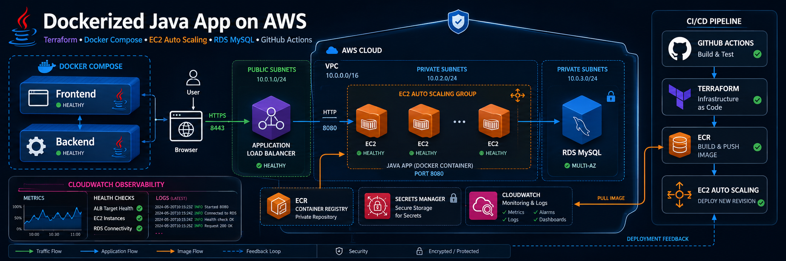
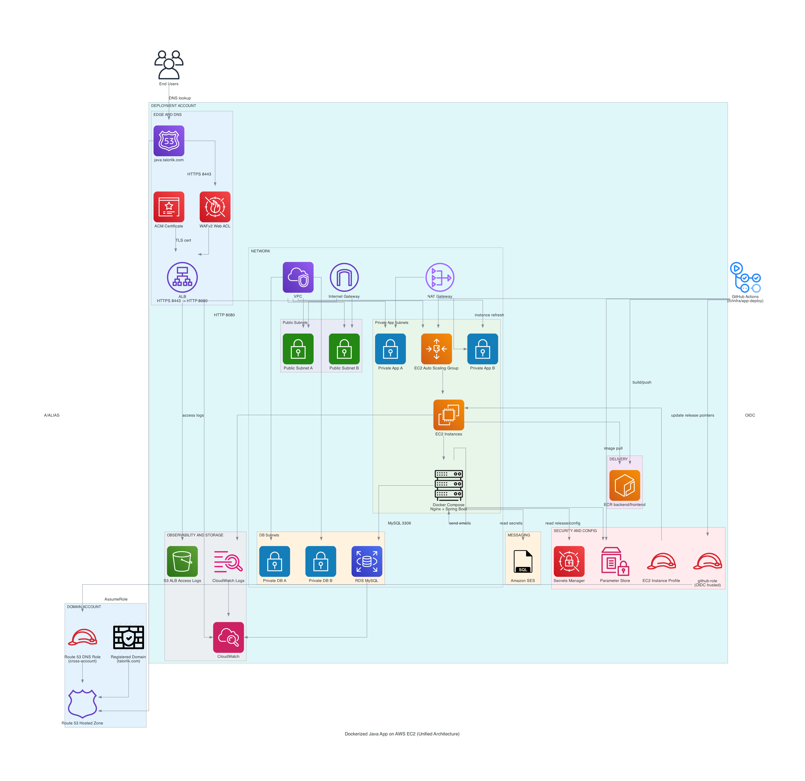

Production-shaped reference implementation for deploying Dockerized Java
applications on EC2 Auto Scaling behind an ALB, with RDS MySQL,
Terraform infrastructure, and GitHub Actions delivery workflows. The
signup app included here is a sample workload.

Overview
What This Project Includes
Spring Boot backend with JWT auth, RBAC, and Flyway migrations
Nginx frontend container proxying /api/* to backend
Private RDS MySQL (central shared DB) with stateless EC2 compute
Terraform-managed AWS foundation across deployment and domain accounts
GitHub Actions OIDC delivery with ASG Instance Refresh rollout
Primary endpoint: https://java.talorlik.com.
Operations and architecture details are aligned with
PROJECT_OVERVIEW.md, PRD, and Technical Requirements docs.
Getting Started
Prerequisites Checklist
DEPLOYMENT account for ALB, EC2/ASG, RDS, ECR, IAM, Secrets Manager, and ACM
DOMAIN account (or same account) hosting Route53 zone for talorlik.com
DEPLOYMENT_ROLE_ARN with GitHub OIDC trust configured
DOMAIN_ROUTE53_ROLE_ARN allowing DNS record updates (when cross-account)
ACM certificate in DEPLOYMENT account for java.talorlik.com
GitHub Environment named prod for apply/destroy workflows
Deploy From Scratch
Complete one-time prerequisites from README.md: DEPLOYMENT account, DOMAIN account role chain, ACM cert, GitHub vars/secrets, and prod environment.
Bootstrap remote Terraform state in infra/bootstrap and copy the backend block output into infra/envs/prod/backend.tf.
Optionally run infra-plan.yml, then run infra-apply.yml to provision VPC, ALB, ASG, RDS, ECR, IAM, Route53, and observability resources.
Run app-deploy.yml to execute CI gates, push SHA-tagged images to ECR, update SSM release pointers, and trigger ASG instance refresh.
Retrieve first admin credentials from Secrets Manager and sign in.
Deploy Commands
# 1) Bootstrap state (local, one-shot)
cd infra/bootstrap
export AWS_REGION=us-east-1
terraform init
terraform apply -var aws_region=us-east-1 -var state_bucket_name="java-app-tfstate-<DEPLOYMENT_ACCOUNT_ID>-us-east-1"
terraform output backend_block_example
# 2) (Optional) Terraform plan workflow
gh workflow run infra-plan.yml
gh run watch
# 3) Apply infrastructure
gh workflow run infra-apply.yml
gh run watch
# 4) Deploy app images + refresh ASG
gh workflow run app-deploy.yml
gh run watch
Destroy Stack (Reverse Order)
Destroy follows the README sequence. Both workflow-based destroy paths require
the exact confirmation value DESTROY.
# 1) Tear down application layer
gh workflow run app-destroy.yml -f confirm=DESTROY
gh run watch
# 2) Tear down production infrastructure
gh workflow run infra-destroy.yml -f confirm=DESTROY -f run_app_cleanup=true
gh run watch
Optional: remove infra/bootstrap resources only when decommissioning
the project completely.
Architecture
Route53 aliases java.talorlik.com to an internet-facing ALB.
The ALB forwards to EC2 instances in an Auto Scaling Group, where
frontend and backend containers run via Docker Compose. The backend
connects to private RDS MySQL, and secrets are sourced from AWS
Secrets Manager.

Key Paths
app/backend/ - Spring Boot application
app/frontend/ - static frontend and Nginx config
app/docker/ - local and prod compose files
infra/envs/prod/ - production Terraform environment
Every workflow runs locally under
nektos/act.
.actrc pins
catthehacker/ubuntu:full-24.04 and loads
.github/{env,secrets,vars}.local; templates live next
to them as *.example. The
aws-actions/configure-aws-credentials OIDC step is
gated if: env.ACT != 'true' in every AWS-touching
workflow, and app-deploy.yml carries an
act-only ECR docker login fallback so
docker push picks up credentials reliably.
# Quality gate.
act -W .github/workflows/ci.yml workflow_dispatch
# Single CI job (skip the heavier compose-smoke).
act -W .github/workflows/ci.yml workflow_dispatch -j backend
# Build/push deploy job (writes to real ECR + ASG; restrict scope).
act -W .github/workflows/app-deploy.yml workflow_dispatch -j build-test
# Terraform plan (read-only).
act -W .github/workflows/infra-plan.yml workflow_dispatch